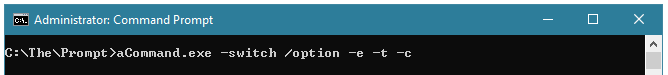

Command Line Interface - The Basics
All command line shells work off the principle of a prompt where you type a command (either internal to the shell or an external .EXE file) and possibly add some options/switches/parameters/arguments, such as:
After typing the command you press Enter and the command runs.
If there's an error it should display the error. Read the lines between the command you typed and the next prompt to see what the problem is - often it tells you exactly what the problem is.
If a command seems hung, stuck, or otherwise non-responsive try pressing any of: Ctrl+C, or Ctrl+Break, or Ctrl+Z, or Ctrl+D -- these either cancel or break the command, or end the input it may be waiting for.
Type EXIT (or exit, it's not case sensitive) to quit the shell (or click the [X] since the console is just a regular
window displaying the shell). BUT resist the urge to close the Console when you're done with it -
leave it open and try to use the CLI before you reach for the mouse.
Spelling, Punctuation, and Spaces matter.
Sometimes the CaSe of letters matters, but usually not on Windows (only really for some options/switches). Command/File/Folder case does matter on Linux/Unix/macOS.
Most of what applies to the CMD/DOS Command Prompt applies to PowerShell, but usually not the other way around - PowerShell is newer.
Anything - any commands - you type at the prompt can be turned into a script. Which at its most basic level is just a batch of commands to run (literally a "batch file"). Though scripts can be more complex with variables, branches/conditionals, loops, etc. We won't be covering scripting, but that's basically all a script is - a list of commands to run you type into a file, instead of one at a time at the prompt.